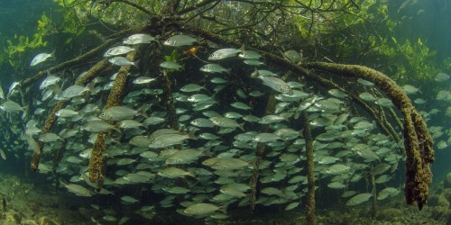

Los manglares se distinguen de cualquier otro ecosistema boscoso por ser los que concentran más carbono en el suelo, por ello su preservación es esencial para mitigar el cambio climático.
Sin embargo, de acuerdo con investigadores y organizaciones no gubernamentales, dos proyectos podrían perjudicar seriamente esa zona: el Centro Integralmente Planeado de la Costa del Pacífico, impulsado por el Fondo Nacional de Fomento al Turismo (Fonatur) y la hidroléctrica Las Cruces, que prevé construir la Comisión Federal de Electricidad (CFE).
La Reserva de la Biosfera Marismas Nacionales es una zona de humedales costeros de incalculable valor ecológico que aloja entre 10 y 20% de los manglares del país. Se trata de un complejo que comprende un área total de 220 000 hectáreas, formado por lagunas costeras, manglares, pantanos y cañadas en las costas de los estados de Sinaloa y Nayarit en las regiones conocidas como Las Cabras, Teacapán, Agua Brava, Marismas Nacionales y San Blas. Lo abastecen principalmente dos ríos: San Pedro Mezquital y Acaponeta.

Las cientos de especies de fauna que ahí habitan incluyen 99 endémicas (sólo existen en ese lugar) y 73 amenazadas o en vías de extinción. Entre ellas hay anfibios, reptiles y aves en abundancia. En la zona viven también 98 especies de mamíferos; uno es el jaguar y otro el venado cola blanca.
En cuanto a flora, hay 82 especies, una subespecie y tres variedades de plantas vasculares incluidas las cuatro descritas de manglar: el rojo, el blanco, el negro y el botoncillo.
En sus pantanos, alimentados por agua dulce y salina mezclada gracias a las mareas, habitan numerosas especies que son aprovechadas por los pescadores locales, como camarones, robalos, jaibas, lisas, mojarras y bagres
Es uno de los 1 891 humedales de relevancia mundial enlistados en la Convención Ramsar, que busca la conservación y uso racional de dichos ecosistemas. Hasta hoy 160 países han suscrito el acuerdo, incluido México, que en 1995 obtuvo el reconocimiento de todo el complejo lagunar como Sitio Ramsar.
Al valor natural y recreativo de este tesoro ecológico se suman los múltiples servicios ambientales que proporciona, entre ellos regulación del clima, control de la erosión del terreno, suministro de agua, captura de dióxido de carbono, tratamiento de desechos y protección de las pesquerías ribereñas y de alta mar. También constituye una barrera natural contra huracanes.
En la zona hay agricultura, ganadería y cultivo de ostión y camarón (además de la pesca), que dan sustento a las poblaciones locales de comuneros y ejidatarios. Es un cuerpo de agua costero que por su valor ecológico y económico ha sido estudiado por diversas universidades de México desde los años 80.